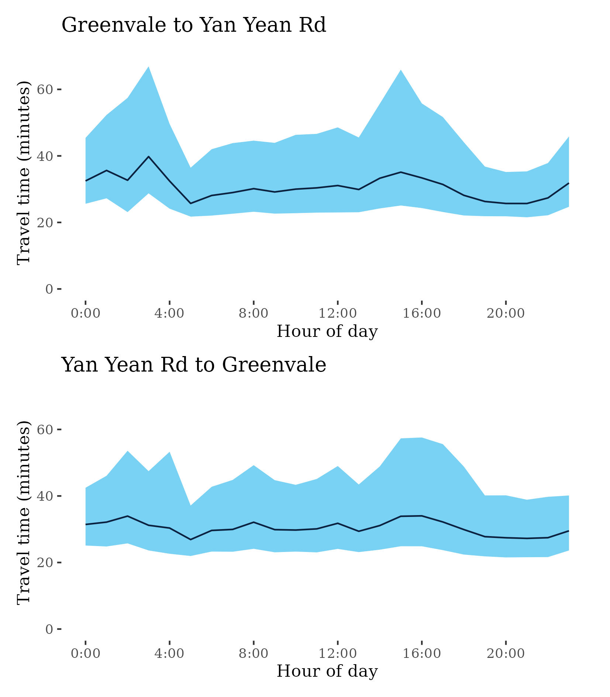

Congestion Report 2020
Congestion Report 2020Melbourne
The figure below shows all 19 selected Melbourne freight vehicle routes and an index of the METR across each route.
The figure below shows changes in the METRs and MEURs across each of the 19 selected Melbourne freight vehicle routes. Travel time congestion increased across almost most routes but particularly on surface routes in Northern Melbourne. Motorway routes were more stable despite large reductions in 2020.
Unlike in Sydney, increases in mean excess uncertainty was fairly systematic. It was also noticeable on both freeway and surface routes.
Whilst less pronounced than in Sydney, renewed lockdowns in the third quarter of 2020 saw improvements in congestion across many routes.
Route 13-49 – Monash Freeway to South Gippsland Highway / South Gippsland Highway to Monash Freeway
This route arcs through Melbourne’s outer south eastern suburbs to from the Monash Freeway at Glen Waverley to the South Gippsland Highway, just south of Dandenong. The route traverses the suburbs of Clayton, Springvale and Keysborough, and crosses the M3. It is known by names including the Dandenong Bypass, Westall Road and Clayton Road and includes a small portion of the Princes Highway.
| Direction | Best travel time | Longest median travel time | METR | Least uncertainty range | Most uncertainty range | MEUR | Distance |
|---|---|---|---|---|---|---|---|
| Monash Freeway to South Gippsland Highway | 0:14:12 | 0:20:35 | 1.153 | 0:05:26 | 0:11:45 | 1.57 | 14.82 |
| South Gippsland Highway to Monash Freeway | 0:18:21 | 0:22:29 | 1.1 | 0:06:58 | 0:14:36 | 1.386 | 18.19 |
The best median travel times and least uncertainty for journeys from the Monash Freeway to South Gippsland Highway were at 6am with a median travel time of 14 minutes and an interquartile range of 5.5 minutes. The longest median travel times were at 2am with a median of 21 minutes and the greatest uncertainty at 5pm with an interquartile range of 12 minutes.
The best median travel times and lowest uncertainty for journeys from South Gippsland Highway to the Monash Freeway were at 5am with a median travel time of 18 minutes and an interquartile range of 7 minutes. The longest median travel times and greatest uncertainty were at 5pm with a median of 22.5 minutes and an interquartile range of 14.5 minutes.
Route 15 – Beach Road to Surrey Hills / Surrey Hills to Beach Road
This surface route extends from Canterbury Road in Surrey Hills to Beach Road in Parkdale. The route traverses Moorabbin, Oakleigh, the major retail precinct at Chadstone and Burwood in Melbourne’s south east, crossing the M1 (East) along the way. It is also known as Warrigal Road.
| Direction | Best travel time | Longest median travel time | METR | Least uncertainty range | Most uncertainty range | MEUR | Distance |
|---|---|---|---|---|---|---|---|
| Beach Road to Surrey Hills | 0:19:59 | 0:33:37 | 1.24 | 0:07:15 | 0:21:33 | 1.718 | 18.87 |
| Surrey Hills to Beach Road | 0:20:31 | 0:27:07 | 1.14 | 0:05:19 | 0:18:43 | 1.993 | 18.87 |
The best median travel times and least uncertainty for journeys from Beach Road to Surrey Hills were at 7pm with a median travel time of 20 minutes and an interquartile range of 7 minutes. The longest median travel times and greatest uncertainty were at 8am with a median of 34 minutes and an interquartile range of 21.5 minutes.
The best median travel times for journeys from Surrey Hills to Beach Road were 20.5 minutes at 10pm and the lowest uncertainty was at 10pm with an interquartile range of 5 minutes. The longest median travel times were 27 minutes at 3pm and the greatest uncertainty were at 5pm with an interquartile range of 19 minutes/
Route 22 – Ferntree Gully to M1 / M1 to Ferntree Gully
This surface route in Melbourne’s East starts at the M1 (east) at Notting Hill and extends east through Wheelers Hill and Knoxfield to Ferntree Gully. It services light industrial areas in the vicinity of the M3. It is also known as Ferntree Gully Road.

| Direction | Best travel time | Longest median travel time | METR | Least uncertainty range | Most uncertainty range | MEUR | Distance |
|---|---|---|---|---|---|---|---|
| Ferntree Gully to M1 | 0:12:37 | 0:15:50 | 1.138 | 0:05:00 | 0:12:00 | 1.582 | 12.56 |
| M1 to Ferntree Gully | 0:12:42 | 0:15:16 | 1.114 | 0:04:46 | 0:08:11 | 1.453 | 12.61 |
The best travel times and lowest uncertainty travelling from Ferntree Gully to the M1 were at 4am and 11pm with a median travel time of 13 minutes and an interquartile range of 5 minutes. The longest median travel times were at 2am with a median of 16 minutes and the greatest uncertainty at 8am with an interquartile range of 12 minutes.
The best median travel times and lowest uncertainty for journeys from the M1 to Ferntree Gully were at 5am with a median travel time of 13 minutes and an interquartile range of 5 minutes. The longest median travel times were at 8pm with a median of 15 minutes and the greatest uncertainty at 2am with an interquartile range of 8 minutes.
Route 3 – Albert Park to Cheltenham / Cheltenham to Albert Park
This surface route travels south east from Albert Park, south-east of the Melbourne CBD, through St Kilda, Brighton and Moorabbin to meet Route 15 (Warrigal Road) at Cheltenham/Mentone. It is also known as the Nepean Highway.
| Direction | Best travel time | Longest median travel time | METR | Least uncertainty range | Most uncertainty range | MEUR | Distance |
|---|---|---|---|---|---|---|---|
| Albert Park to Cheltenham | 0:15:14 | 0:21:46 | 1.158 | 0:04:09 | 0:19:13 | 2.116 | 16.07 |
| Cheltenham to Albert Park | 0:14:48 | 0:21:19 | 1.261 | 0:04:54 | 0:14:51 | 1.913 | 16.02 |
The best median travel times and lowest uncertainty for journeys from Albert Park to Cheltenham were at midnight with a median travel time of 15 minutes and an interquartile range of 4 minutes. The longest median travel times and greatest uncertainty were at 4pm with a median of 22 minutes and an interquartile range of 19 minutes.
The best median travel times and least uncertainty for journeys from Cheltenham to Albert Park were at 1am with a median travel time of 15 minutes and an interquartile range of 5 minutes. The longest median travel times were at 5pm with a median of 21 minutes and the greatest uncertainty at 8am with an interquartile range of 15 minutes.
Route 32 – Derrimut to Montrose / Montrose to Derrimut
This 53-kilometre surface route extends from Derrimut, west of the CBD, to Montrose on the eastern urban fringe. It crosses under the M80, passes Somerville Road, Footscray Road, Port of Melbourne and Victoria Street/Parade at Carlton, Burke Road in Camberwell, Canterbury Road, and intersects with the M3 at Ringwood.
| Direction | Best travel time | Longest median travel time | METR | Least uncertainty range | Most uncertainty range | MEUR | Distance |
|---|---|---|---|---|---|---|---|
| Derrimut to Montrose | 1:08:04 | 1:29:13 | 1.165 | 0:41:26 | 1:23:44 | 1.554 | 52.85 |
| Montrose to Derrimut | 1:13:50 | 1:34:19 | 1.126 | 0:49:44 | 1:24:10 | 1.41 | 53.10 |
The best median travel times and lowest uncertainty for journeys from Derrimut to Montrose were at 4am with a median travel time of 1 hour 8 minutes and an interquartile range of 41 minutes. The longest median travel times were at 1am with a median of 1 hour 29 minutes and the greatest uncertainty at midnight with an interquartile range of 1 hour 24 minutes.
The best median travel times and lowest uncertainty for journeys from Montrose to Derrimut were at 6am with a median travel time of 1 hour 14 minutes and an interquartile range of 50 minutes. The longest median travel times were 1 hour 34 minutes at 2am and the greatest uncertainty were at 1am with an interquartile range of 1 hour 24 minutes
Route 35 – Hume Highway to M80 / M80 to Hume Highway
This surface route extends north from the Metropolitan Ring Road (M80) past Broadmeadows to Roxburgh Park and then east through Somerton to the intersection with Sydney Road (old Hume Highway). It serves light industrial areas around Somerton and uses Pascoe Vale and Somerton Roads.
| Direction | Best travel time | Longest median travel time | METR | Least uncertainty range | Most uncertainty range | MEUR | Distance |
|---|---|---|---|---|---|---|---|
| Hume Highway to M80 | 0:09:18 | 0:18:44 | 1.202 | 0:03:04 | 0:17:15 | 2.712 | 8.32 |
| M80 to Hume Highway | 0:09:15 | 0:20:26 | 1.237 | 0:03:55 | 0:16:53 | 2.257 | 8.29 |
The best median travel times and lowest uncertainty for journeys from Hume Highway to the M80 were at 9pm with a median travel time of 9 minutes and an interquartile range of 3 minutes. The longest median travel times and greatest uncertainty were at 3am with a median of 19 minutes and an interquartile range of 17 minutes.
The best median travel times and lowest uncertainty for journeys from the M80 to Hume Highway were at midnight with a median travel time of 9 minutes and an interquartile range of 4 minutes. The longest median travel times were 20.5 minutes at 2am and the greatest uncertainty were at 5pm with an interquartile range of 17 minutes
Route 40 – Doncaster to M2 / M2 to Doncaster
This surface route extends from Doncaster in the east to the M2 at Strathmore, north of the CBD. The route traverses suburbs including Heidelberg, Preston and Coburg, incorporating Manningham Road, Banksia Street and Bell Street along its length.
| Direction | Best travel time | Longest median travel time | METR | Least uncertainty range | Most uncertainty range | MEUR | Distance |
|---|---|---|---|---|---|---|---|
| Doncaster to M2 | 0:19:35 | 0:29:59 | 1.275 | 0:06:57 | 0:28:44 | 2.365 | 18.61 |
| M2 to Doncaster | 0:21:28 | 0:32:43 | 1.21 | 0:07:01 | 0:36:53 | 2.301 | 18.63 |
The best median travel times and least uncertainty for journeys from Doncaster to the M2 were at 4am with a median travel time of 19.5 minutes and an interquartile range of 7 minutes. The longest median travel times were at 3pm with a median of 30 minutes and the greatest uncertainty at 3am with an interquartile range of 29 minutes.
The best median travel times and lowest uncertainty for journeys from the M2 to Doncaster were at 4am with a median travel time of 21.5 minutes and an interquartile range of 7 minutes. The longest median travel times and greatest uncertainty were at 5pm with a median of 33 minutes and an interquartile range of 37 minutes.
Route 55 – Hume Freeway to Montague St / Montague St to Hume Freeway
This surface route connects the Hume Freeway at Craigieburn and Montague Street in south Melbourne via Sydney Road through Somerton, Coburg and North Melbourne, skirting the CBD along Dudley Street and Wurundjeri Way.

| Direction | Best travel time | Longest median travel time | METR | Least uncertainty range | Most uncertainty range | MEUR | Distance |
|---|---|---|---|---|---|---|---|
| Hume Freeway to Montague St | 0:33:00 | 0:44:02 | 1.205 | 0:17:07 | 0:58:09 | 2.372 | 28.02 |
| Montague St to Hume Freeway | 0:34:59 | 0:47:01 | 1.176 | 0:17:19 | 0:57:33 | 2.227 | 27.98 |
The best median travel times and least uncertainty for journeys from Hume Freeway to Montague Street were at 5am with a median travel time of 33 minutes and an interquartile range of 17 minutes. The longest median travel times and greatest uncertainty were at 2pm with a median of 44 minutes and an interquartile range of nearly an hour (58 minutes).
The best median travel times and least uncertainty for journeys from Montague Street to the Hume Freeway were at 5am with a median travel time of 35 minutes and an interquartile range of 17 minutes. The longest median travel times were 47 minutes at 5pm and the greatest uncertainty were at 11am with an interquartile range of 57 minutes
Route 56 – Laverton to Spotswood / Spotswood to Laverton
This surface route travels a short distance (9 kilometres) between Laverton and Spotswood in Melbourne’s west using Dohertys Road, Grieve Parade and Blackshaws Road and passes a number of light industrial areas.

| Direction | Best travel time | Longest median travel time | METR | Least uncertainty range | Most uncertainty range | MEUR | Distance |
|---|---|---|---|---|---|---|---|
| Laverton to Spotswood | 0:12:40 | 0:22:42 | 1.194 | 0:05:36 | 0:35:09 | 2.019 | 9.14 |
| Spotswood to Laverton | 0:12:43 | 0:19:51 | 1.24 | 0:05:44 | 0:33:54 | 2.222 | 9.14 |
The best median travel times and least uncertainty for journeys from Laverton to Spotswood were at 5am with a median travel time of 13 minutes and an interquartile range of 6 minutes. The longest median travel times were at 3am with a median of 23 minutes and the greatest uncertainty at 11pm with an interquartile range of 35 minutes.
The best median travel times for journeys from Spotswood to Laverton were 13 minutes at 7pm and the lowest uncertainty was at 7pm with an interquartile range of 6 minutes. The longest median travel times and greatest uncertainty were at 11pm with a median of 20 minutes and an interquartile range of 34 minutes.
Route 58 – Greenvale to Yan Yean Road / Yan Yean Road to Greenvale
This surface route extends across Melbourne’s northern fringe connecting Mickleham Road in the west and the intersection of Gorge Road and Yan Yean Road near Plenty in northeast Melbourne. It uses Somerton Road, Cooper Street, High Street and McDonalds Road.

| Direction | Best travel time | Longest median travel time | METR | Least uncertainty range | Most uncertainty range | MEUR | Distance |
|---|---|---|---|---|---|---|---|
| Greenvale to Yan Yean Road | 0:25:42 | 0:39:47 | 1.192 | 0:13:19 | 0:40:50 | 1.784 | 22.32 |
| Yan Yean Road to Greenvale | 0:26:54 | 0:34:01 | 1.129 | 0:15:11 | 0:32:42 | 1.506 | 22.45 |
The best travel times and lowest uncertainty travelling from Greenvale to Yan Yean Road were at 9pm and 8pm with a median travel time of 26 minutes and an interquartile range of 13 minutes. The longest median travel times were at 3am with a median of 40 minutes and the greatest uncertainty at 3pm with an interquartile range of 41 minutes.
The best median travel times for journeys from Yan Yean Road to Greenvale were 27 minutes at 5am and the lowest uncertainty was at 5am with an interquartile range of 15 minutes. The longest median travel times and greatest uncertainty were at 4pm with a median of 34 minutes and an interquartile range of 33 minutes.

Route 60 – M3 to Southbank / Southbank to M3
This surface route travels southeast from the Melbourne CBD roughly parallel to, but south of, the M1 (East). From Southbank it passes through suburbs including Prahran, Oakleigh and Springvale before meeting the M3 at Noble Park. It is also known as the Princes Highway.
| Direction | Best travel time | Longest median travel time | METR | Least uncertainty range | Most uncertainty range | MEUR | Distance |
|---|---|---|---|---|---|---|---|
| M3 to Southbank | 0:26:55 | 0:37:57 | 1.204 | 0:12:19 | 0:43:09 | 1.775 | 26.92 |
| Southbank to M3 | 0:27:53 | 0:35:52 | 1.116 | 0:10:20 | 0:32:05 | 1.687 | 26.82 |
The best median travel times and least uncertainty for journeys from the M3 to Southbank were at 4am with a median travel time of 27 minutes and an interquartile range of 12 minutes. The longest median travel times were at 5pm with a median of 38 minutes and the greatest uncertainty at midnight with an interquartile range of 43 minutes.
The best median travel times and least uncertainty for journeys from Southbank to the M3 were at 5am with a median travel time of 28 minutes and an interquartile range of 10 minutes. The longest median travel times and greatest uncertainty were at 4pm with a median of 36 minutes and an interquartile range of 32 minutes.
M1 (East) – City to M420 / M420 to City
This route follows the M1 connecting Port Melbourne and the South Gippsland Freeway (M420) on Melbourne’s southeast fringe. It serves light industrial areas around Dandenong and interregional freight from Gippsland. For most of its length it is known as the Monash Freeway.
| Direction | Best travel time | Longest median travel time | METR | Least uncertainty range | Most uncertainty range | MEUR | Distance |
|---|---|---|---|---|---|---|---|
| City to M420 | 0:26:49 | 0:36:43 | 1.061 | 0:03:05 | 0:29:44 | 2.727 | 36.04 |
| M420 to City | 0:26:55 | 0:29:31 | 1.038 | 0:03:03 | 0:13:21 | 2.311 | 36.47 |
The best median travel times and lowest uncertainty for journeys from City to M420 were at 5am with a median travel time of 27 minutes and an interquartile range of 3 minutes. The longest median travel times and greatest uncertainty were at 4pm with a median of 37 minutes and an interquartile range of 30 minutes.
The best median travel times and least uncertainty for journeys from the M420 to City were at 4am with a median travel time of 27 minutes and an interquartile range of 3 minutes. The longest median travel times were at 6am with a median of 30 minutes and the greatest uncertainty at 5pm with an interquartile range of 13 minutes.
M1 (West) – City to M80 / M80 to City
This route follows the West Gate Freeway (M1) connecting at its confluence with the Western Ring Road (M80) at Altona and the M2 at Port Melbourne. It serves extensive freight areas around the Port precinct and in Melbourne’s west.

| Direction | Best travel time | Longest median travel time | METR | Least uncertainty range | Most uncertainty range | MEUR | Distance |
|---|---|---|---|---|---|---|---|
| City to M80 | 0:07:13 | 0:11:00 | 1.151 | 0:01:18 | 0:11:54 | 3.202 | 9.04 |
| M80 to City | 0:07:13 | 0:08:30 | 1.068 | 0:01:18 | 0:04:57 | 1.984 | 9.00 |
The best median travel times and lowest uncertainty for journeys from the City to the M80 were at 5am with a median travel time of 7 minutes and an interquartile range of 78 seconds. The longest median travel times were at 5pm with a median of 11 minutes and the greatest uncertainty at 4pm with an interquartile range of 12 minutes.
The best median travel times and lowest uncertainty for journeys from the M80 to the City were at 5am with a median travel time of 7 minutes and an interquartile range of 78 seconds. The longest median travel times and greatest uncertainty were at 8am with a median of 8.5 minutes and an interquartile range of 5 minutes.
M2 – CityLink then Tullamarine / Tullamarine then CityLink
This route connects Melbourne Airport and the M1 at Port Melbourne via the CityLink toll road and Tullamarine Freeway.

| Direction | Best travel time | Longest median travel time | METR | Least uncertainty range | Most uncertainty range | MEUR | Distance |
|---|---|---|---|---|---|---|---|
| CityLink then Tullamarine | 0:14:45 | 0:15:12 | 1.009 | 0:01:05 | 0:02:32 | 1.549 | 19.76 |
| Tullamarine then CityLink | 0:14:31 | 0:14:58 | 1.011 | 0:00:48 | 0:02:10 | 1.658 | 19.78 |
The best travel times and lowest uncertainty travelling from CityLink were at 12am and 2am with a median travel time of 15 minutes and an interquartile range of 65 seconds. The longest median travel times and greatest uncertainty were at 6pm with a median of 15 minutes and an interquartile range of 2.5 minutes.
The best median travel times and lowest uncertainty for journeys from Tullamarine were at 10pm with a median travel time of 15 minutes and an interquartile range of 48 seconds. The longest median travel times were at 9am with a median of 15 minutes and the greatest uncertainty at 10am with an interquartile range of 2 minutes.
M3 – Frankston to Hoddle Street / Hoddle Street to Frankston
This route runs between Abbotsford, northeast of the CBD, and Frankston in Melbourne’s far south east. It uses the Eastern Freeway, Eastlink and the Frankston Freeway.

| Direction | Best travel time | Longest median travel time | METR | Least uncertainty range | Most uncertainty range | MEUR | Distance |
|---|---|---|---|---|---|---|---|
| Frankston to Hoddle St | 0:34:04 | 0:36:46 | 1.025 | 0:03:24 | 0:12:33 | 1.803 | 53.03 |
| Hoddle St to Frankston | 0:33:49 | 0:39:35 | 1.039 | 0:03:21 | 0:16:24 | 2.089 | 53.33 |
The best median travel times and least uncertainty for journeys from Frankston to Hoddle Street were at 10pm with a median travel time of 34 minutes and an interquartile range of 3.5 minutes. The longest median travel times were 37 minutes at 5pm and the greatest uncertainty were at 8am with an interquartile range of 12.5 minutes
The best travel times and lowest uncertainty travelling from Hoddle Street to Frankston were at 10pm and midnight with a median travel time of 34 minutes and an interquartile range of 3 minutes. The longest median travel times were 40 minutes at 5pm and the greatest uncertainty were at 4pm with an interquartile range of 16.5 minutes
M420 – Monash Freeway to South Gippsland Highway / South Gippsland Highway to Monash Freeway
This short (4.5 kilometre) route connects the M1 (East) to the South Gippsland Highway at Lyndhurst, servicing industrial areas in Melbourne’s south east, via the South Gippsland Freeway.
| Direction | Best travel time | Longest median travel time | METR | Least uncertainty range | Most uncertainty range | MEUR | Distance |
|---|---|---|---|---|---|---|---|
| City to M80 | 0:02:47 | 0:03:23 | 1.084 | 0:00:31 | 0:01:48 | 2.101 | 4.20 |
| M80 to City | 0:03:07 | 0:03:41 | 1.063 | 0:00:46 | 0:02:19 | 1.358 | 4.57 |
The best median travel times and least uncertainty for journeys from the Monash Freeway to South Gippsland Highway were at 9am with a median travel time of 3 minutes and an interquartile range of 31 seconds. The longest median travel times and greatest uncertainty were at 5pm with a median of 3 minutes and an interquartile range of 2 minutes.
The best travel times and lowest uncertainty travelling from South Gippsland Highway to the Monash Freeway were at 7pm and 5am with a median travel time of 3 minutes and an interquartile range of 46 seconds. The longest median travel times were at 3am with a median of 4 minutes and the greatest uncertainty at 8am with an interquartile range of 2 minutes.
M79 – Essendon to Gap Road / Gap Road to Essendon
This lengthy motorway route follows the A79/M79 from Gap Road, west of Sunbury, to Essendon where it joins the CityLink toll road. For most of its length it is known as the Calder Freeway.
| Direction | Best travel time | Longest median travel time | METR | Least uncertainty range | Most uncertainty range | MEUR | Distance |
|---|---|---|---|---|---|---|---|
| Essendon to Gap Road | 0:18:26 | 0:19:53 | 1.025 | 0:01:11 | 0:07:16 | 2.262 | 27.27 |
| Gap Road to Essendon | 0:16:46 | 0:18:56 | 1.054 | 0:00:56 | 0:07:49 | 2.494 | 27.21 |
The best travel times and lowest uncertainty travelling from Essendon to Gap Road were at 5am and 8pm with a median travel time of 18.5 minutes and an interquartile range of 71 seconds. The longest median travel times and greatest uncertainty were at 5pm with a median of 20 minutes and an interquartile range of 7 minutes.
The best median travel times and lowest uncertainty for journeys from Gap Road to Essendon were at 4am with a median travel time of 17 minutes and an interquartile range of just under 1 minute. The longest median travel times and greatest uncertainty were at 6am with a median of 19 minutes and an interquartile range of 8 minutes.
M80 – Altona to Greensborough / Greensborough to Altona
This 38 kilometre route follows the M80 (Western Ring Road) in the west and north of Melbourne. It passes through the western outskirts of the Melbourne metropolitan area as the Western Ring Road, meets the M1 and proceeds to the Greensborough Bypass in north-east Melbourne as the Metropolitan Ring Road.

| Direction | Best travel time | Longest median travel time | METR | Least uncertainty range | Most uncertainty range | MEUR | Distance |
|---|---|---|---|---|---|---|---|
| Altona to Greensborough | 0:25:08 | 0:33:52 | 1.065 | 0:04:01 | 0:25:22 | 2.02 | 37.52 |
| Greensborough to Altona | 0:24:58 | 0:28:08 | 1.046 | 0:03:22 | 0:11:36 | 1.916 | 37.42 |
The best median travel times and lowest uncertainty for journeys from Altona to Greensborough were at 8pm with a median travel time of 25 minutes and an interquartile range of 4 minutes. The longest median travel times and greatest uncertainty were at 5pm with a median of 34 minutes and an interquartile range of 25 minutes.
The best median travel times and least uncertainty for journeys from Greensborough to Altona were at 5am with a median travel time of 25 minutes and an interquartile range of 3 minutes. The longest median travel times were 28 minutes at 4pm and the greatest uncertainty were at 9pm with an interquartile range of 12 minutes.
Princes Freeway – Geelong Ring Road to M80/M80 to Geelong Ring Road
This route connects Geelong to the Melbourne orbital road network. It also serves Melbourne’s expanding Western Suburbs.
| Direction | Best travel time | Longest median travel time | METR | Least uncertainty range | Most uncertainty range | MEUR | Distance |
|---|---|---|---|---|---|---|---|
| Geelong Ring Road to M80 | 0:28:07 | 0:31:37 | 1.031 | 0:02:05 | 0:12:36 | 2.351 | 45.38 |
| M80 to Geelong Ring Road | 0:27:58 | 0:29:18 | 1.022 | 0:01:45 | 0:06:07 | 1.75 | 45.11 |
The best median travel times and lowest uncertainty for journeys from the Geelong Ring Road to the M80 were at 9pm with a median travel time of 28 minutes and an interquartile range of 2 minutes. The longest median travel times and greatest uncertainty were at 7am with a median of 32 minutes and an interquartile range of 12.5 minutes.
The best median travel times and lowest uncertainty for journeys from the M80 to the Geelong Ring Road were at 7pm with a median travel time of 28 minutes and an interquartile range of 2 minutes. The longest median travel times and greatest uncertainty were at 8am with a median of 29 minutes and an interquartile range of 6 minutes.
Western Freeway – Bacchus Marsh to Derrimut / Derrimut to Bacchus Marsh
This route follows the Western Freeway (M8) linking Bacchus Marsh west of Melbourne and Derrimut where it meets the M80 (Western Ring Road).

| Direction | Best travel time | Longest median travel time | METR | Least uncertainty range | Most uncertainty range | MEUR | Distance |
|---|---|---|---|---|---|---|---|
| Bacchus Marsh to Derrimut | 0:21:49 | 0:22:59 | 1.03 | 0:02:10 | 0:06:01 | 1.66 | 35.67 |
| Derrimut to Bacchus Marsh | 0:22:06 | 0:28:15 | 1.038 | 0:01:20 | 0:17:37 | 3.15 | 35.62 |
The best median travel times and lowest uncertainty for journeys from Bacchus Marsh to Derrimut were at 2am with a median travel time of 22 minutes and an interquartile range of 2 minutes. The longest median travel times were 23 minutes at 4pm and the greatest uncertainty were at 8am with an interquartile range of 6 minutes
The best median travel times and lowest uncertainty for journeys from Derrimut to Bacchus Marsh were at 8pm with a median travel time of 22 minutes and an interquartile range of 80 seconds. The longest median travel times and greatest uncertainty were at 5pm with a median of 28 minutes and an interquartile range of 18 minutes.